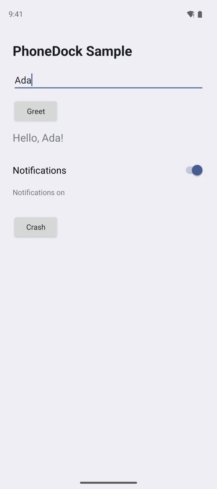
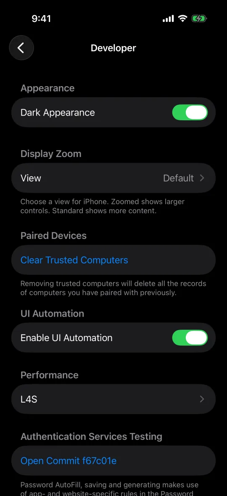
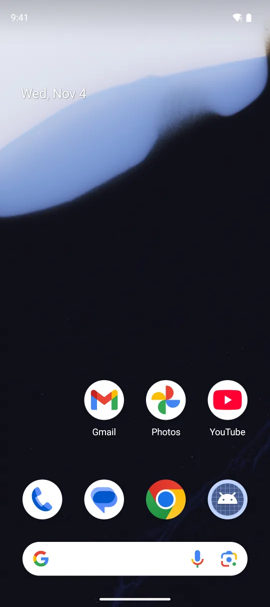
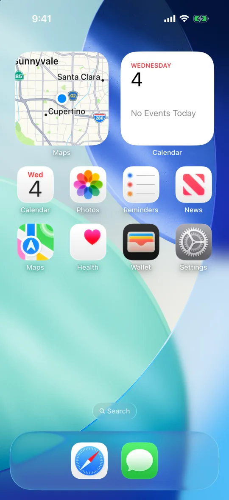

PhoneDock runs on your Mac. Your agent sends it taps, swipes and text, and you watch each phone in a window, where you can pause the agent or take over at any point.
Agent driving. It reads the screen, taps things by their label, types, and checks that what it expected actually showed up.
Waiting for you. It reached a Face ID prompt and asked you to approve it.
You’re driving. Agents can’t touch the phone until you give it back.
How it works
Your agent connects over MCP, the CLI or an SDK. PhoneDock runs the devices and shows them live in the app.
PhoneDock
MCP server, CLI and SDKs
Local service on 127.0.0.1
Mac app with live view and takeover
-
get_ui
Reads the screen as text. Every element gets its own line, like
e12 Button "Settings" @(540,1210), so the agent doesn’t have to guess from a screenshot. -
tap text="Settings"
Taps things by name. The same command works on any screen size, and the result says exactly what got tapped.
-
wait_for "Display"
Checks its own work. It waits for the screen it expected. If something else shows up, the agent is told what’s actually there.
At Face ID or a password, it stops and asks you.
Your agent won’t type your password or solve a CAPTCHA. It calls request_human, says what it needs, and waits for you.
-
The agent asks.
You get a request like “Approve the Face ID prompt, then tap Done.” It shows up above the phone in the app, and as a notification if you’re in another app.
-
You take over.
Click Take Over and the phone is yours. Agents are locked out while you have it.
-
You hand it back.
Click Done, with a note if you want, and the agent carries on from where it stopped. If you can’t do it, click Can’t Do It and the agent is told why.
Emulators, simulators and real phones
Emulators, simulators, Android phones and iPhones sit side by side in one window. PhoneDock makes emulators and simulators from the system images on your Mac, and connects the phones on your desk.
-

Android emulator
With Google APIs or the Play Store. Save snapshots and make clones.
-

iOS simulator
Any iOS version you’ve installed in Xcode.
-

Android phone
Over USB, or over Wi-Fi with the pairing code from Wireless debugging.
-

iPhone Beta
iOS 27 or later, over Wi-Fi. Nothing to install on the phone.
phonedock setup connects Claude Code, Codex, Cursor and Pi for you. Anything else that speaks MCP, like Claude Desktop, Windsurf or VS Code, needs three lines of JSON. There’s also a CLI, plus TypeScript and Python SDKs.
Prompts to try
Paste one into your agent.
-
Read your phone’s settings.
“Open Settings and tell me my battery health, storage left and iOS version.”
The agent opens Settings and reads the numbers back to you.
-
Research.
“Open the Play Store, find Duolingo and tell me what the newest reviews complain about.”
Claude Sonnet did this on a real Android phone in about 90 seconds.
-
Testing your app.
“Build the app, open the new settings screen in light and dark mode, and attach screenshots to the PR.”
Reproduce a bug with the logs, the crash report and the UI tree, and leave the evidence on the PR.
-
Tests for CI.
“Save what you just did as a test.”
It becomes a YAML file that runs on every pull request.
-
Browse an Instagram profile.
“Open our Instagram profile and go through the last few posts.”
Works in apps you didn’t build, on a real phone.
Turn a finished task into a test for every PR
When the agent finishes a task, it can call save_flow. PhoneDock writes the steps into a short YAML file, and phonedock test replays it.
flows/greet.yaml
name: Greet Ada and turn on notifications
appId: dev.phonedock.sample
platform: android
steps:
- launch: dev.phonedock.sample
- assert_visible: PhoneDock Sample
- fill: { field: Your name, value: Ada }
- tap: Greet
- wait_for: { visible: "Hello, Ada!" }
- tap: { text: Notifications, type: Switch }
- assert_visible: Notifications on- Taps are saved by their text, so they still work when the layout changes.
- Typing into a field is one step.
- Retries and dead ends are dropped.
- It adds a check on the first and last screens.
Terminal
$ phonedock test flows/ --device Pixel --junit junit.xml
Greet Ada and turn on notifications
PASS launch dev.phonedock.sample 1.9s
PASS assert_visible PhoneDock Sample 0.4s
PASS fill Your name = Ada 5.8s
PASS tap Greet 0.7s
PASS wait_for "Hello, Ada!" 0.3s
PASS tap Notifications 0.8s
PASS assert_visible Notifications on 0.4s
1 passed · junit.xml writtenExample output. Your timings will differ.
- A failed step fails the build. It returns a non-zero exit code, so the check goes red.
- Every failure comes with a screenshot. It also says what it expected and what was on screen, and saves the UI tree and recent logs.
- JUnit and Maestro export. JUnit XML goes to your test report, and --maestro exports the flow if your team uses Maestro.
Install it, then connect your agents
Install the app and run phonedock setup. It finds the agents you have, connects PhoneDock to each one, installs the PhoneDock skill and puts phonedock on your PATH.
-
Install.
Download the latest release and drag PhoneDock into Applications. It’s signed and notarized.
-
Connect your agents.
/Applications/PhoneDock.app /Contents /Resources /bin /phonedock setup You can also use Connect an Agent… in the app. Add --dry-run to see what it would change, or --uninstall to undo it. It backs up any file before changing it, and leaves settings it didn’t write alone.
-
Ask your agent.
Use PhoneDock to create an iPhone simulator, open Settings and turn on Dark Mode.Start a fresh agent session so it picks up PhoneDock.
iPhone simulators need Xcode and Android emulators need the Android SDK. If something is missing, the app tells you and gives you the command that fixes it.
Privacy and limits
It runs on your Mac.
The service only listens on 127.0.0.1 and needs a token for every request. PhoneDock only goes online when you ask it to, for example to download a system image.
Your agent’s model still sees the screen.
Whatever the agent reads, screenshots and on-screen text included, goes to its model provider. Keep that in mind before you open anything private on the phone.
What it can’t do yet
- Mac only: Apple silicon, macOS 15 or later.
- Real iPhone support is in beta. On iOS 26 and older you also need WebDriverAgent on the phone.
- On iOS 27 only one app can show an iPhone’s screen at a time, so close Xcode’s device window or iPhone Mirroring first.
- Simulators need Xcode, and emulators need the Android SDK.
- App Store apps don’t run in the iOS simulator. Use a real iPhone for those.
Questions
Is it free?
Yes. It’s open source under Apache-2.0. The download is signed and notarized, or you can build it yourself from the repo.
Which agents work with it?
phonedock setup handles Claude Code, Codex, Cursor and Pi. Any other MCP client can connect over stdio (phonedock mcp) or Streamable HTTP. If your agent doesn’t do MCP, it can use the CLI, and scripts can use the TypeScript or Python SDK.
Do I need a real phone?
No. PhoneDock can make Android emulators and iOS simulators for you. Connect a real phone when you need one.
What does a real iPhone need?
iOS 27 or later, paired with your Mac, with Developer Mode and UI Automation turned on. Nothing gets installed on the phone, and USB or Wi-Fi both work. It’s still in beta, and older iOS versions need WebDriverAgent. The iPhone guide has the steps.
Can several agents share the devices?
Yes. Whoever is using a device holds a lease on it, and input from anyone else is refused until it’s released. A lease ends when the agent’s session ends, or after 10 idle minutes.
Does my screen leave my Mac?
PhoneDock doesn’t send anything anywhere. Your agent does send screenshots and screen text to its model provider, the same as with anything else it reads.
How is it different from other phone tools for agents?
Other tools can drive phones, and Maestro runs flows. PhoneDock also shows every device live in a Mac window, where you can take over at any time or answer the agent when it asks for help. Flows export to Maestro if you already use it.
Does it run on Linux, Windows or in the cloud?
Not right now. It’s a Mac app. In CI, use a macOS runner.